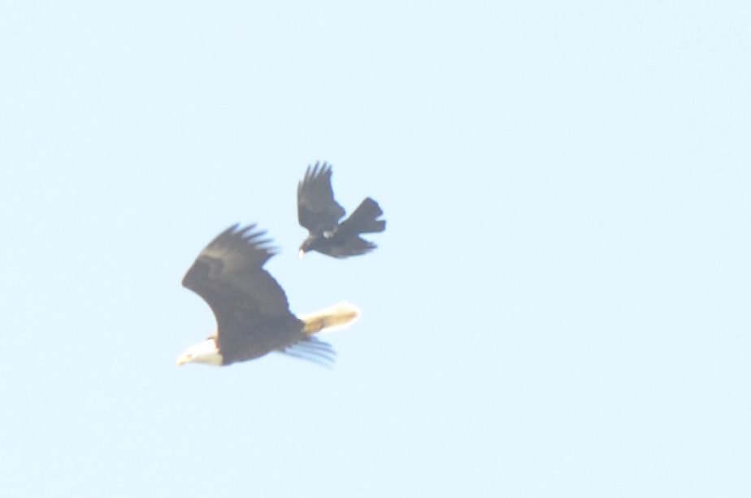

Today I had to make a very difficult decision and it took a lot from me. That's all I'll get into though, some things are meant to be kept private. Regardless I will be doing lots of reflecting and learning.
On a different note, here is a Crow attacking a Bald Eagle that I photographed off of my porch!
I have recently been really enjoying coding and am working on the next installment of my fun super-resolution YouTube series... It has me learning a lot of new things, and I am really excited to share it with everyone soon! Working on projects is the most fulfilling thing for me, I really want to lean into this and put a lot of energy and effort into creating fun and interesting stuff for both my own curiosity and for other's too!
On that note, here are some fun bird drawings I made this evening, the first is a silly Wren made from a fun spiral style and the other is a more rough sketch style Osprey!
I have been having a lot of fun drawing recently and have even started making my own stickers! My first order comes this Friday, I can't wait to see how they turned out. I probably should have invested slightly less money, $140 for my first order (3 designs, 20 stickers each) may have been a bit much, but I'm excited regardless.
I'm just ending the night with some chill 'coding' which is actually just making this journal entry... and am ready for some sleep soon. I need to rest, my mind has been going through a lot lately. Hoping for a happy and healthy night and a beautiful day for everyone tomorrow!
Bye!